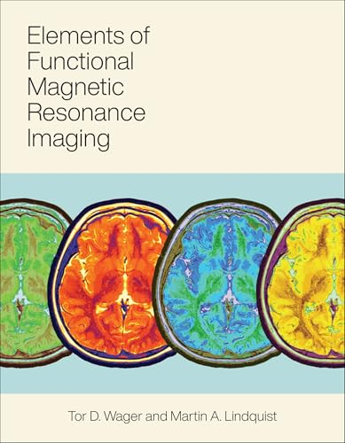
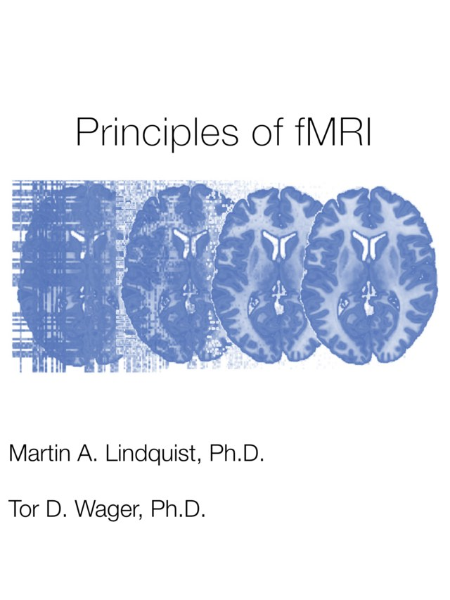

Research
Research themes

Elements of Functional Magnetic Resonance ImagingWager & Lindquist, MIT Press 2026 · MIT Press ↗ ⌘Elements of fMRI tutorialsInteractive companion tutorials on GitHub ↗
Principles of fMRIWager & Lindquist, Leanpub e-book ↗Loading…